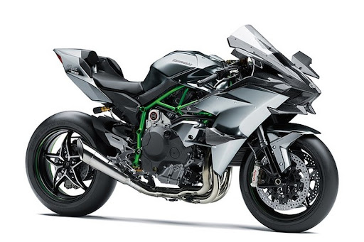
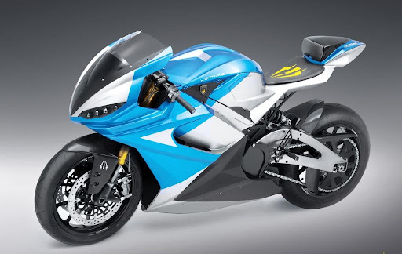
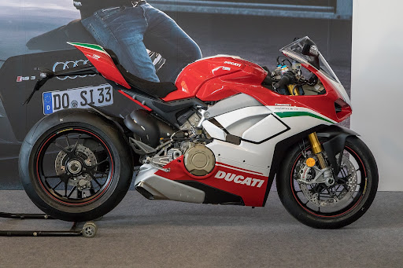
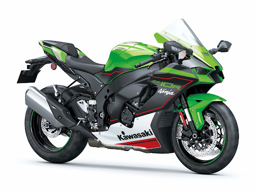
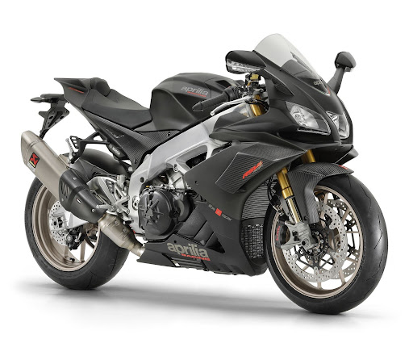

Além de um meio de transporte ágil e econômico, as motocicletas podem oferecer muita emoção ao
conduzir modelos esportivos
1. Kawasaki Ninja H2R, 400 km/h
A Kawasaki Ninja H2R é a moto mais rápida do mundo, com 400 km/h, mas só pode andar
nas pistas. (Fonte: Kawasaki/Reprodução)
O nome Ninja é tradicional no universo das motocicletas e já fica no primeiro lugar desta lista. O modelo
H2R foi feito para rodar apenas nas pistas, com motor de 326 cavalos — mais de 100 cavalos acima das
outras motos da lista. A versão H2 (sem o R) é liberada para andar nas ruas, mas chega a “apenas” 326
km/h.
2. Lightning LS-218, 348 km/h
A segunda moto mais rápida do mundo é elétrica, da marca norte-americana Lightning.
(Fonte: Lightning/Divulgação)
Muito se fala nos carros elétricos, mas também existem as motos com esse tipo de motor, como é o caso
desse modelo, que é o segundo mais rápido do mundo. A Lightning (nome sugestivo, já que significa
“raio”, em português) é uma marca estadunidense pouco conhecida, porém impressiona com a potência e
velocidade dessa moto, com 200 cv.
3. Ducati Panigale V4R, 331 km/h
A Ducati Panigale ganhou uma nova geração em 2018, com ainda mais potência e
velocidade. (Fonte: Wikimedia Commons)
Também com motor de 4 cilindros em V, a Ducati tem motor maior que sua conterrânea italiana logo
acima, com 1,2 mil cilindradas. Isso faz que ela tenha ainda mais potência (221 cv) e alcance ainda mais
velocidade, sendo uma das motos esportivas mais elogiadas do mundo.
4. Kawasaki Ninja ZX-10R, 318 km/h
O nome “Ninja” é tradicional no universo das motocicletas, e o modelo 10R é a quinta
moto mais rápida do mundo. (Fonte: Kawasaki/Divulgação)
A Kawasaki tinha um modelo ainda mais rápido em sua linha, o ZX-14R. Porém, ele parou de ser fabricado
em 2020; chegava a 335 km/h. O modelo 10R tem motor de mil cilindradas, em vez das 1,4 mil do 14R,
mas não fica muito atrás deste na velocidade máxima, chegando a impressionantes 318 km/h.
5. Aprilia RSV4 1.100, 316 km/h
O modelo RSV4 da Aprilia representa as motos italianas entre as mais rápidas do mundo.
(Fonte: Aprilia/Divulgação)
Essa fabricante italiana é menos conhecida mundialmente que sua conterrânea Ducati, mas também
produz motos incrivelmente rápidas. Seu modelo top de linha é o RSV4, com motor de quatro cilindros em
V e 1100 cm3, que rende 217 cv de potência.